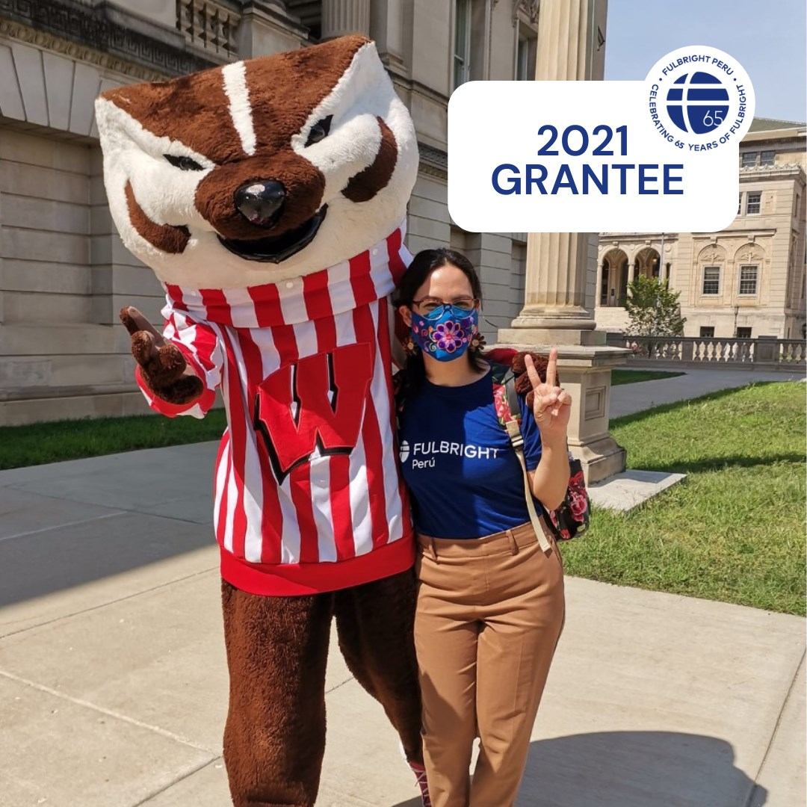
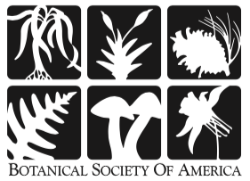
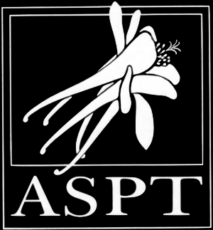
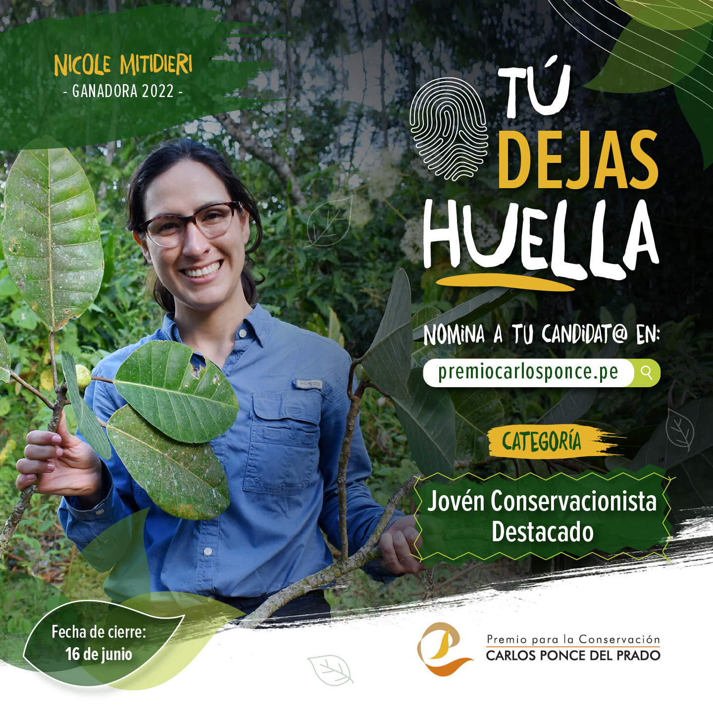
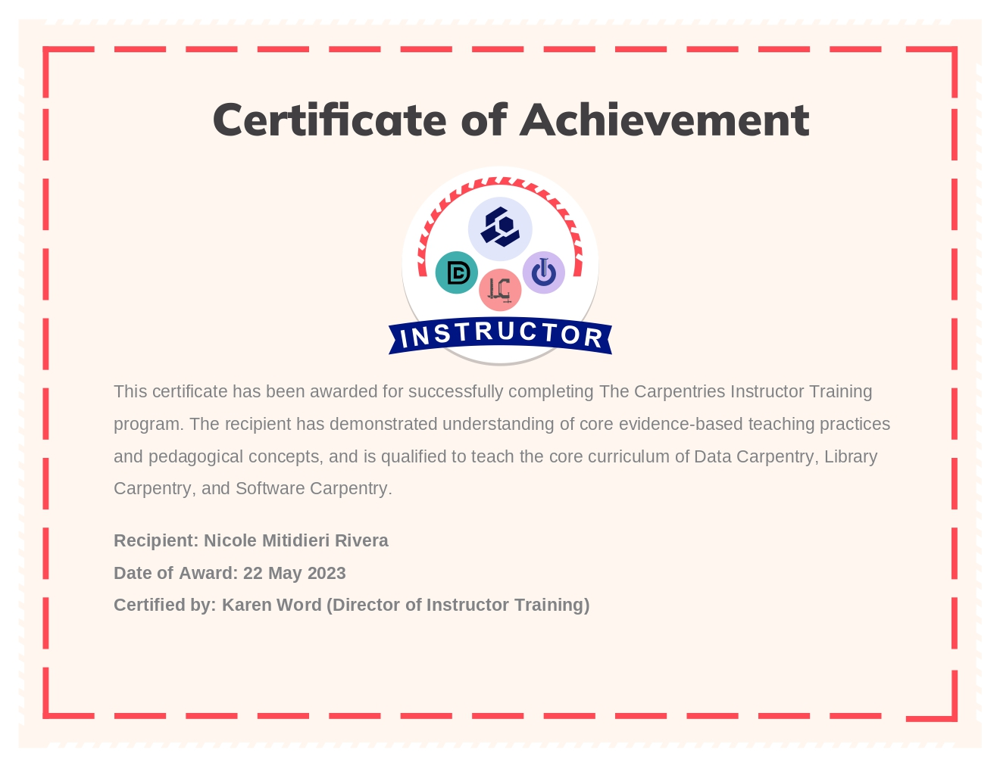
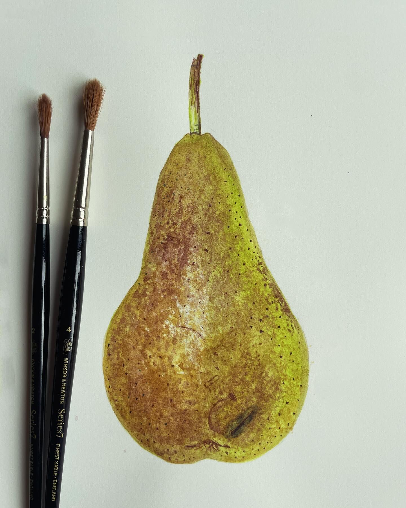
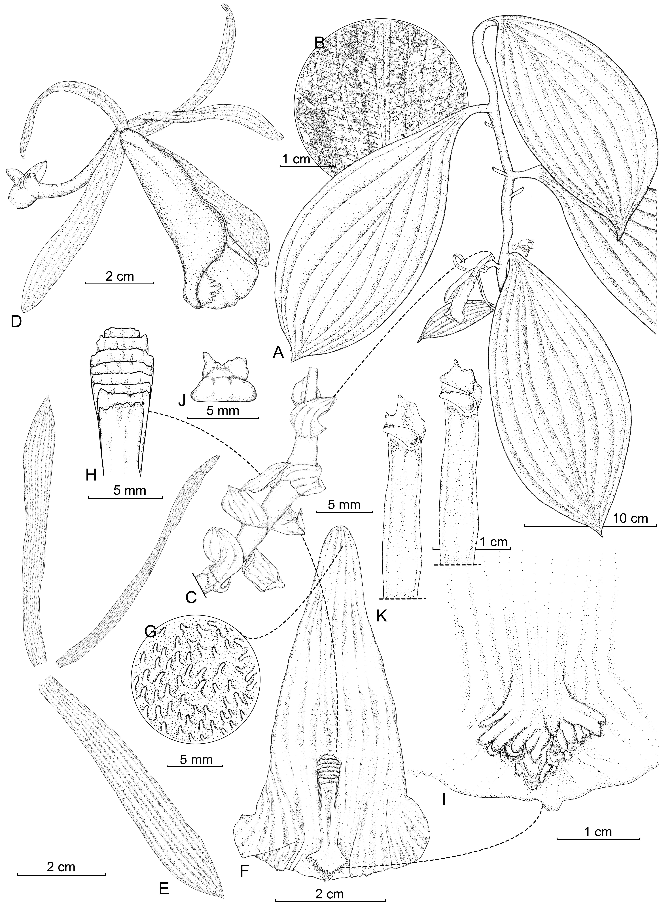
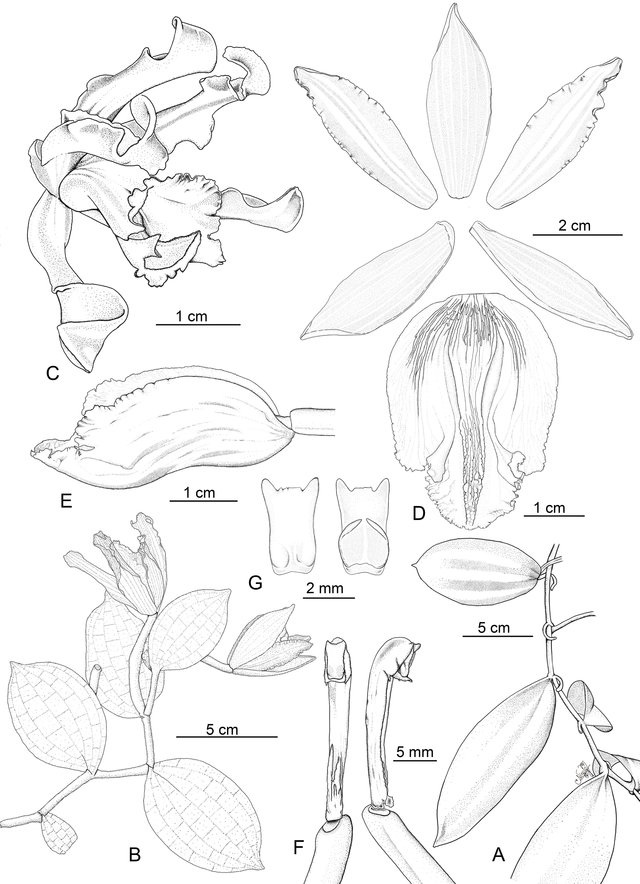
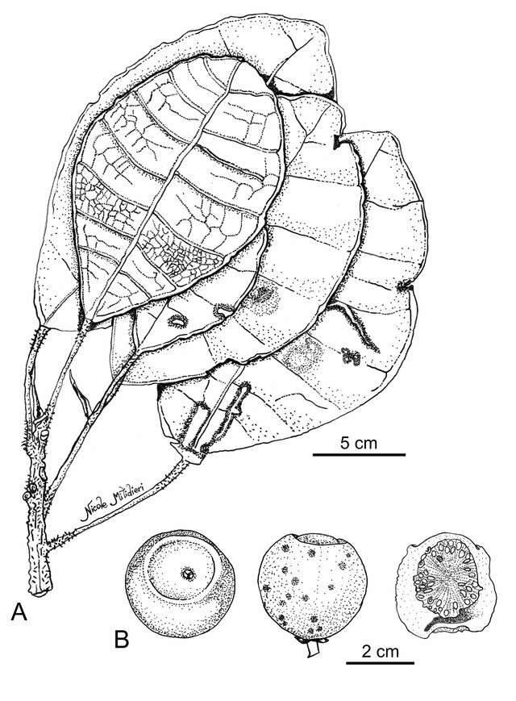
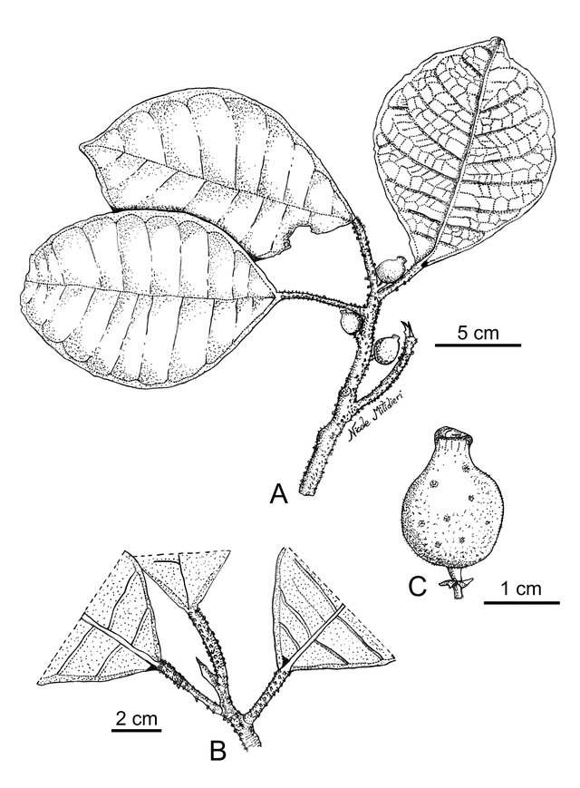

The Society of Systematic Biologists
2023 recipient of the SSB Graduate Student Research Award
2023 recipient of the SSB Graduate Student Research Award
2023 recipient of the NYBG Visiting Scientist Travel Awards

2021 Grantee from Peru.
2023 & 2024 Grantee.

2022 recipient of the BSA Graduate Research Grant.

2022 recipient of the ASPT Graduate Student Research Grant.

2022 Recipient of the Premio a la Conservación Carlos Ponce del Prado.

Lessons I can teach (en/es): dc/r & swc/r.
Sanger sequencing and NGS-based hybrid capture methods .
Pen and ink scientific illustration.
Citizen science initiatives.
Data and software carpentry lessons in R.

Trained in fundamental skills such as 3d modelling, colour mixing, painting techniques and composition.

Pear.

Line drawing of Vanilla cameroniana based on the French Guiana holotype. A. Habit. B. Leaf adaxial surface. C. Inflorescence. D. Flower, E. Dissected perianth. F. Lip. G. Pubescent detail at the base of the lip. H. Penicillate callus. I. Detail of the lip apex. J. Anther. K. Column with and without anther. Drawing by N. Mitidieri based on A, D (iNaturalist record), and B, C, E–K Sabatier D. & Prevost M.-F 4912 (SEL).

Line drawing of Vanilla andina based on the Peruvian holotype. A. Habit, B. Inflorescence, C. Flower in lateral view, D. Dissected perianth. E. Lip and column, lateral view. F. Column, ventral (right) and lateral view (left). G. Anther cap in dorsal (left) and ventral (right) view. Drawing by N. Mitidieri.

Ficus sirensis. A. Leafy twig. B. Syconium, apical view, lateral view, and internal view in horizontal section (Drawn by N. Mitidieri; based on J.G. Graham 5257, MOL).

Ficus macrosyce. A. Leafy twig. B. Detail of exfoliating petiole and stem. C. Lateral view of the syconium (Drawn by N. Mitidieri; based on R. Rojas & G. Ortiz 5814, HOXA).